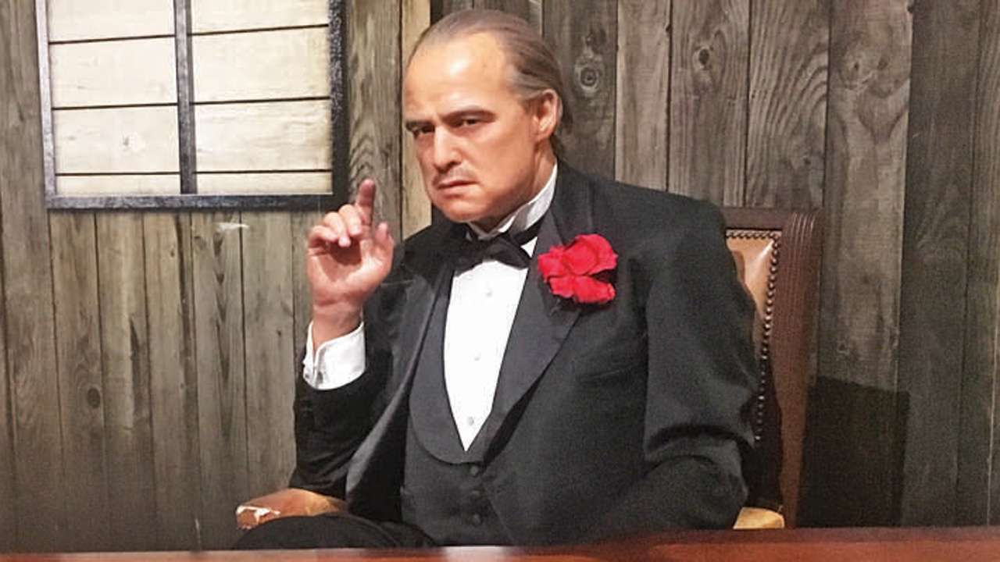

1.THE SHAWSHANK REDEMPTION(1994)
Two imprisoned men bond over a number of years, finding solace and eventual redemption through acts of common decency.
Director:Frank Darabont
Genre:Drama
ImDb Rating:9.3
2.THE GODFATHER(1972)

The aging patriarch of an organized crime dynasty transfers control of his clandestine empire to his reluctant son
Director:Francis Ford Coppola
Genre:Crime,Drama
ImDb Rating:9.2
3.FOREST GUMP(1994)
The presidencies of Kennedy and Johnson, the events of Vietnam, Watergate and other historical events unfold through the perspective of an Alabama man with an IQ of 75, whose only desire is to be reunited with his childhood sweetheart.
Director:Robert Zemeckis
Genre:Drama,Romance
ImDb Rating:8.8
4.The Lord of the Rings: The Fellowship of the Ring (2001)
A meek Hobbit from the Shire and eight companions set out on a journey to destroy the powerful One Ring and save Middle-earth from the Dark Lord Sauron.
Director:Peter Jackson
Genre:Drama,Action
ImDb Rating:8.
5.Schindler's List (1993)
In German-occupied Poland during World War II, industrialist Oskar Schindler gradually becomes concerned for his Jewish workforce after witnessing their persecution by the Nazis.
Director:Steven Spielberg
Genre:Drama,Biography,History
ImDb Rating:8.9
6.Pulp Fiction (1994)

The lives of two mob hitmen, a boxer, a gangster and his wife, and a pair of diner bandits intertwine in four tales of violence and redemption.
Director:Quentin Tarintino
Genre:Crime,Drama
ImDb Rating:8.9
7.Inception
A thief who steals corporate secrets through the use of dream-sharing technology is given the inverse task of planting an idea into the mind of a C.E.O.
Director:Christopher Nolan
Genre:Sci-Fi,Action,Adventure
ImDb Rating:8.8
8.The Dark Knight (2008)
When the menace known as the Joker wreaks havoc and chaos on the people of Gotham, Batman must accept one of the greatest psychological and physical tests of his ability to fight injustice.
Director:Christopher Nolan
Genre:Action,Crime,Drama
ImDb Rating:9.0
9.Avengers: Endgame (2019)
After the devastating events of Avengers: Infinity War (2018), the universe is in ruins. With the help of remaining allies, the Avengers assemble once more in order to reverse Thanos' actions and restore balance to the universe.
Director:Anthony Russo, Joe Russo
Genre:Action,Adventure,Drama
ImDb Rating:8.4
10.Fight Club (1999)

An insomniac office worker and a devil-may-care soapmaker form an underground fight club that evolves into something much, much more.
Director:David Fincher
Genre:Drama
ImDb Rating:8.8